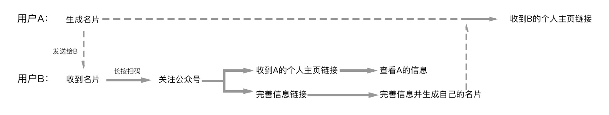
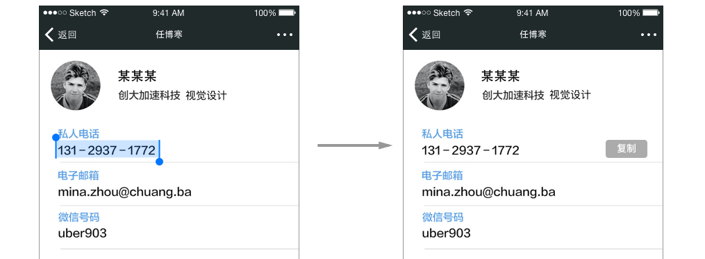
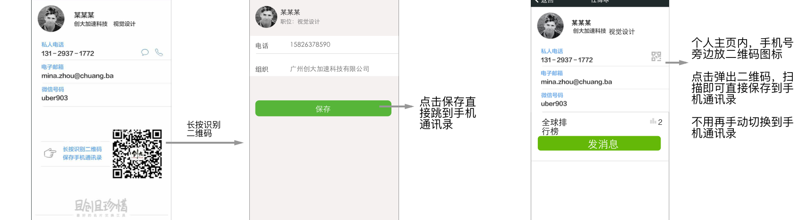

创业者人脉圈
大家应该会遇到这样的问题，特别是互联网从业者，加了很多的微信群（工作的、行业相关等等），在群里会认识很多朋友，与他们交流。但是微信群里人多，信息刷的快，很多关键信息没有沉淀。这个时候对自己的这些人脉以及信息进行管理。
创业者人脉圈是一个基于公众号的创业者聚集的圈子，通过电子名片交换来把大家聚集到一起。用户可以建立自己的圈子并进行运营，大家在里面发表观点讨论问题。
创业者人脉圈主功能分为两个阶段来设计，第一阶段是名片交换（人脉通讯录管理），第二阶段是圈子运营（用户自己建圈子并发表讨论观点）。
这里主要讲交换名片功能遇到的一个问题，这是典型的与公众号结合交互的例子。
流程设计
公众号有很多特殊的性质，为了让名片交互体验与公众号性质结合更紧，我找了一些web app做得好的公众号（比如助理来也、yoli英语等）来学习他们的玩法，并充分阅读公众号文档了解各种接口。最后设计出了适合公众号web app的方案：

问题反馈
名片交换功能上线后，有用户反馈，在查看对方个人资料时想要保存手机号，需要长按、选中手机号复制、手机通讯录保存，这样很麻烦。
优化解决
方案一： 第一反应是在手机号旁边添加一个复制按钮。

但是还是得先点开主页复制，再手动切换到手机联系人添加。
方案二： 为了让保存手机号的流程更简单，通过与对公众号特别了解的交流，得知二维码可以带有联系人信息并且微信已经支持扫描出信息保存到手机通讯录，经过与开发确认，设计出第二个更简便方案。

交换名片后，公众号直接用接口发送一张带个人信息和二维码的图片，用户扫码就可以把对方添加到手机通讯录。即使这次没操作，以后需要也可以通过个人主页扫码添加。这样大大简化了添加到手机通讯录的流程。
感想
做这个项目的最大收获就是学习和探索能力的重要性，因为公众号有特殊性质，在这里做web app和直接做app事完全不一样的，遇到这样情况就要自己主动去探索解决问题的办法，目的就是为了让用户的体验更顺畅。